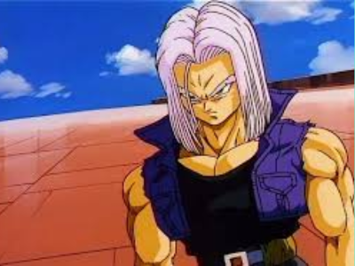

Trunks do futuro
Trunks do Futuro, também conhecido como Mirai Trunks, é um personagem importante na franquia Dragon Ball, criada por Akira Toriyama. Ele é introduzido durante a saga dos Androides e se destaca como um dos heróis mais corajosos e determinados da série. Trunks do Futuro vem de uma linha do tempo alternativa onde os Androides 17 e 18 causaram grande destruição e morte. Ele é o filho de Vegeta e Bulma e herdou os genes Saiyajin de seu pai, bem como sua determinação e orgulho.